심인 · 급고
납량란 독자를 차즘
심인 · 일
동료를 차즘
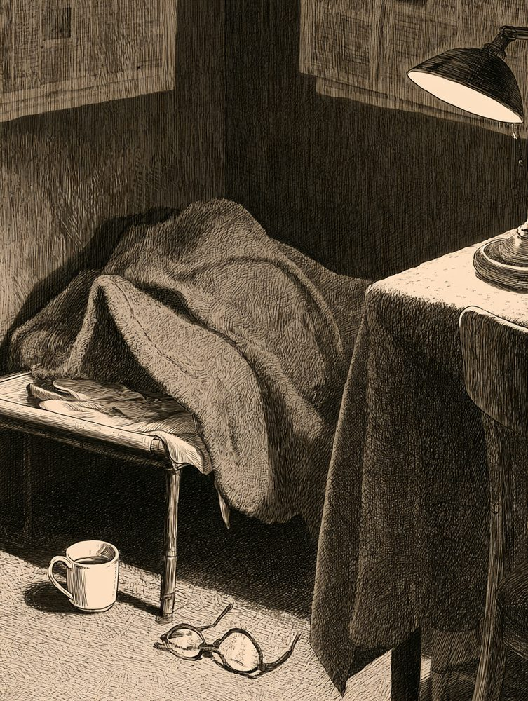
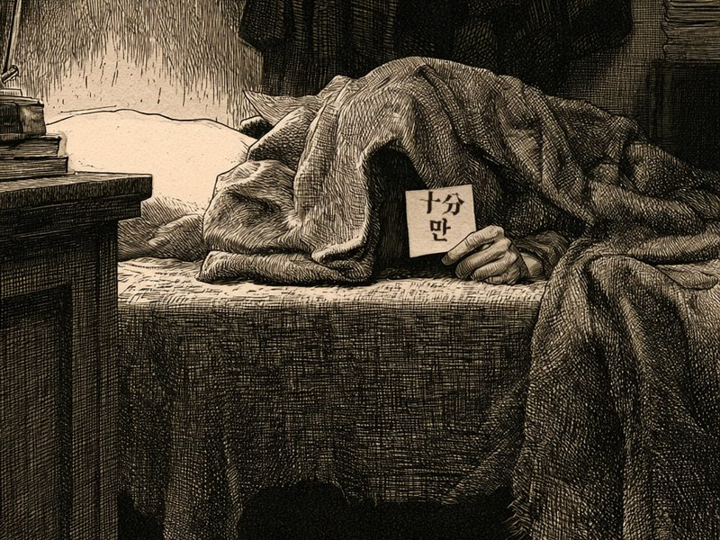
그림 · 재현
☞ 사진 속 이불을 눌러 보시오
- 나이
- 불문. 단, 자정 넘어 눈이 반짝이는 자
- 인상
- 밤눈이 밝고, 낡은 신문 냄새를 조와함. 차를 물처럼 마심
- 버릇
- 마감 전날이면 행방이 묘연해짐. 마감 당일엔 더 묘연해짐
- 간 곳
- 제이집 제작실로 갓스리라 짐작함. 혹은 이불 속
이 사람을 아시는 이, 혹은 이 사람이 당신이면 본사로 통지하시오. 후사함(후사는 크레딧 한 줄 · 식은 차 한 잔 · 편집장의 고개 끄덕임 한 번)
심인 · 이
독자를 차즘

 그림 · 재현
그림 · 재현
- 신문
- 찻잔
- 떡
- 창밧
☞ 사진 속 물건을 눌러 단서를 모으시오 · 단서 0/4
- 나이
- 불문. 손가락 하나로 화면을 내릴 줄 아는 자
- 인상
- 밤에 긔사를 끗까지 읽음. 무서운 대목에선 불을 켬
- 마지막 목격
- 본지 삼 면 하단. 「이따 마저 읽어야지」 하고 사라짐
- 바라는 바
- 도라오면 다음 호를 남보다 먼저 배달하리다. 문은 안 두드리겟소
이 사람을 보신 이, 혹은 이 사람이 당신이면 본사로 통지하시오. 후사함(후사는 새 사건 소식 한 통. 광고 편지는 아니오, 맹세하오)
작은 광고 · 옆으로 넘기시오
심물1 / 6
원고 한 장 차즘
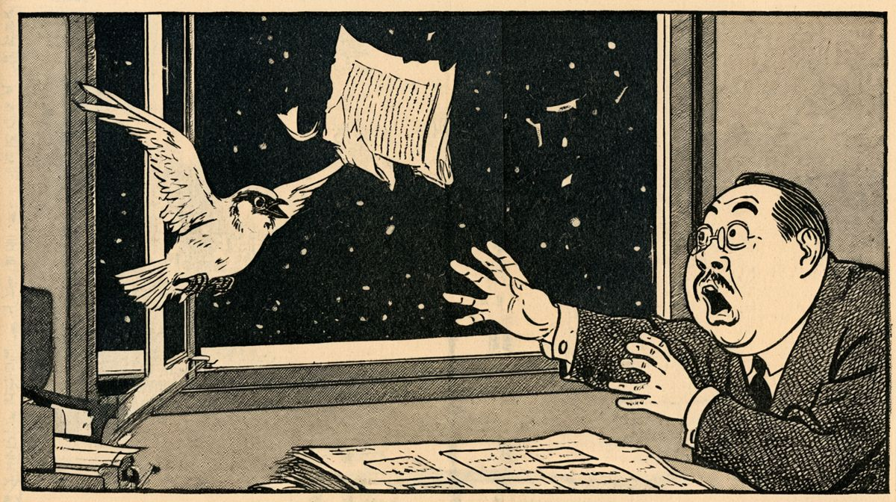
그림 · 재현어젯밤 자정, 편집국 창으로 날아감. 줍는 이는 읽지 말고 돌려주시오. 읽엇거든 감상도 함께. 오자는 못 본 체하시오.
추보 — 차잣소. 고양이가 깔고 안저 잇섯소. 오자 세 개는 고양이가 냇다 함.
심인2 / 6
어제의 나를 차즘
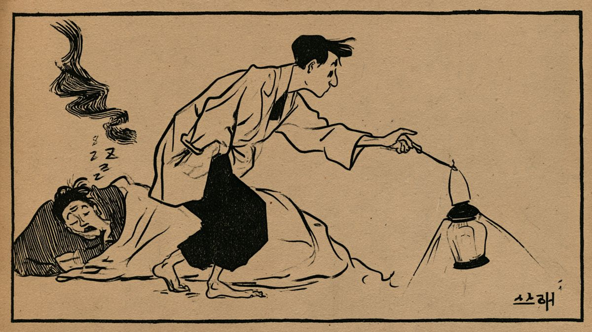
그림 · 재현마감 전까지는 분명 잇섯슴. 인상은 부지런함. 「오 분만」이라 말한 뒤로 세 시간째 소식 업슴.
추보 — 이불 속에서 발견. 아즉 자는 중이라 깨우지 안키로 함.
심묘3 / 6
활자 상자 우의 고양이 차즘
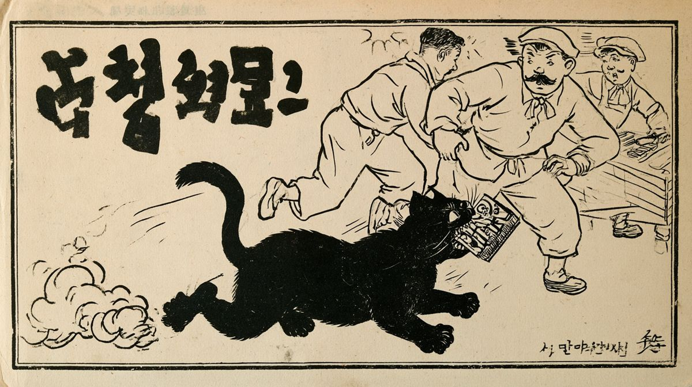
그림 · 재현털빛은 먹색. 「ㄱ」 자 활자를 물고 나감. 고양이도 고양이지만, 솔직히 ㄱ이 더 급함.
심물4 / 6
우산 차즘 · 셋째 번
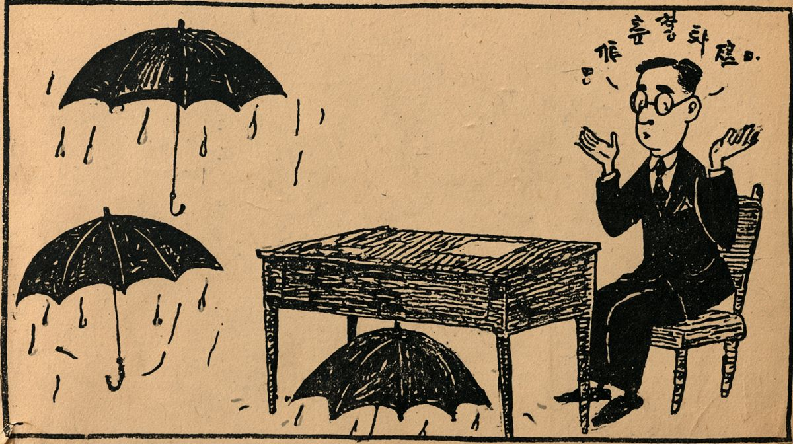
그림 · 재현첫째와 둘째도 아즉 못 차잣슴. 넷째는 사지 안키로 함. 비 오는 날 문 압헤 갓다 두시오.
추보 — 셋 다 편집장 책상 밋헤 잇섯소. 편집장은 「처음 본다」 함.
심인5 / 6
편집장을 차즘
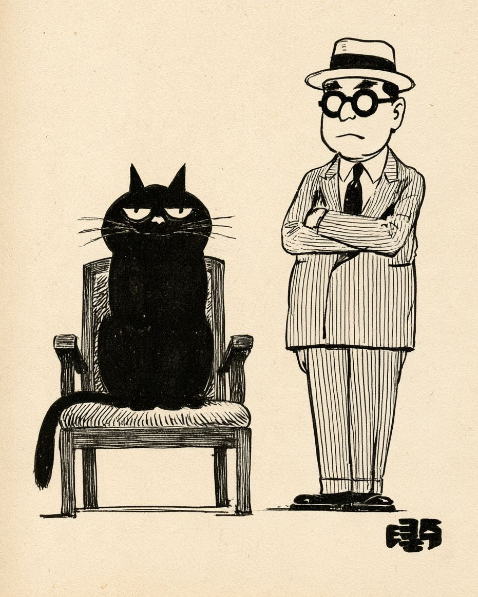
그림 · 재현의자에서 차잣소. 의자 엽헤 서 잇섯소. 의자는 고양이가 쓰는 중이오. 사흘째요.
추보 — 협상 결렬. 고양이는 멸치 두 줌을 요구하엿소.
주의6 / 6
고양이 떼 출몰 주의
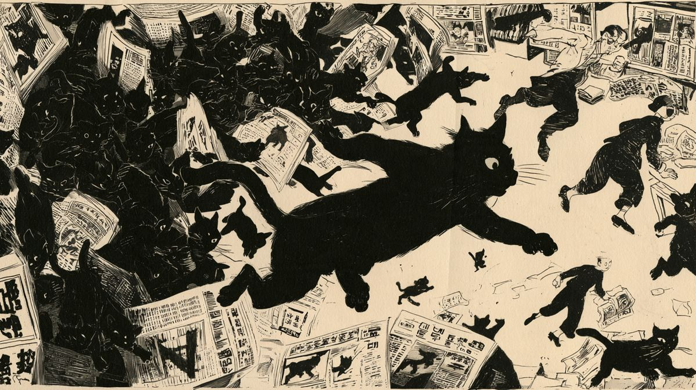
그림 · 재현이 광고면 가장자리에 고양이가 나오거든 누르시오. 다섯 마리를 넘기면 책임지지 아니하오.
광고면 아래칸
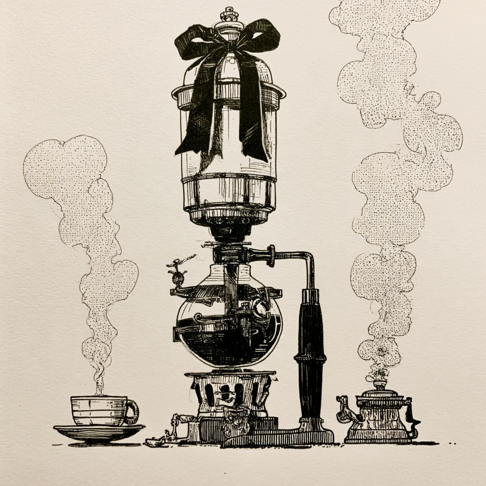
부 고
본사 차 끓이는 기계 영면
향년 칠 세. 생전에 하로 사백 잔을 내렷고, 단 한 번도 마감을 탓하지 안앗소.
상주 · 야근조 일동 조화는 사절, 원두는 환영
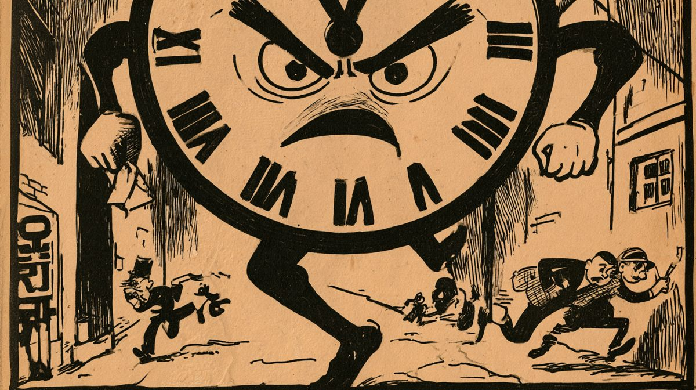
현상 수배
마 감
인상 — 매일 밤 온다. 늦은 적이 한 번도 업다. 문을 잠가도 온다.
자정까지 --:--:--
이 자를 보거든 — 피하지 마시오. 소용업소.
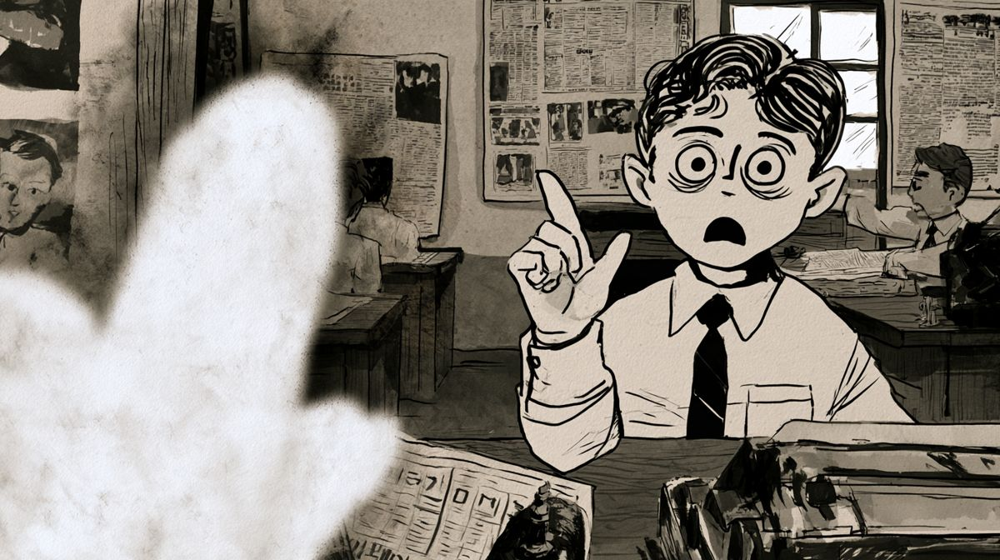
문제의 사진 (재현)
사 과
어제 삼 면의 귀신 사진에 대하야
본보가 귀신이라 보도한 흰 그림자는 편집장의 엄지손가락이엇소. 귀신께 깁히 사과드리오.
이 칸을 누르면 정정이 나오.
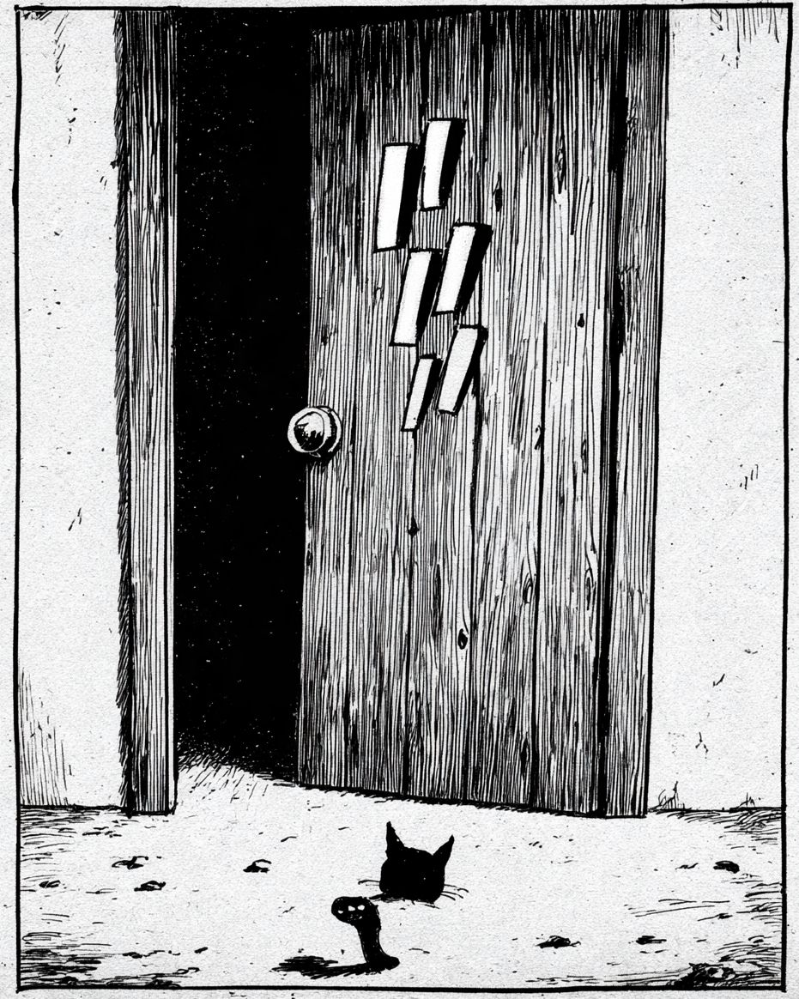
심 인
자정에 문 두드린 이를 차즘
똑, 똑, 똑. 열어 보니 업섯소. 둘째 밤에도 업섯소. 셋째 밤엔 열지 안앗소.
짐작 가는 이는 이 칸을 두드려 보시오.
※ 심인 광고의 틀(인상 · 간 곳 · 후사함)은 1920~30년대 동아일보 광고란에서 빌렷소. 이 면의 광고는 모두 경성야록이 지어 낸 것이오 (재현). 통지는 화면 시연용이며 실제로 접수되지 안소.